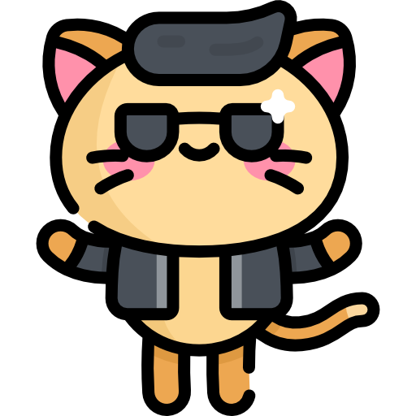
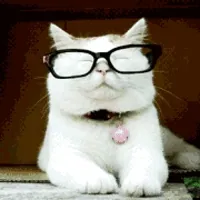
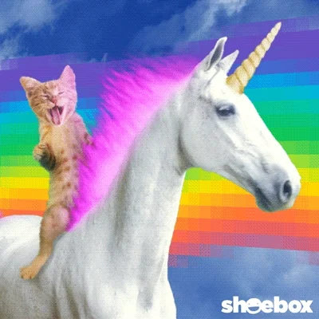
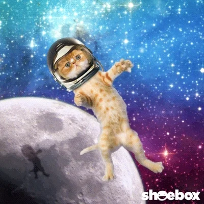
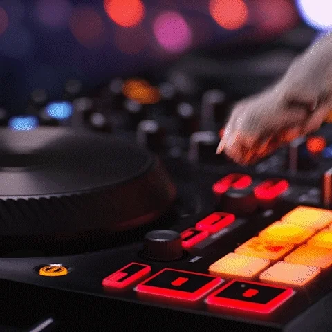
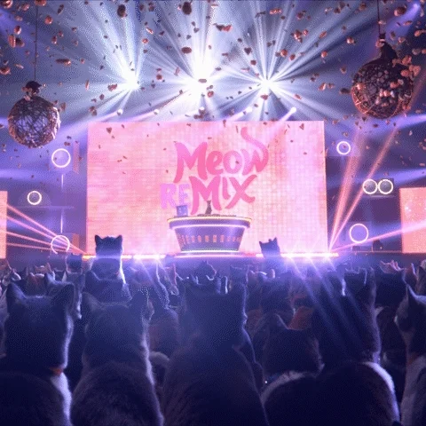
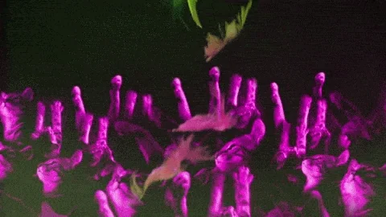
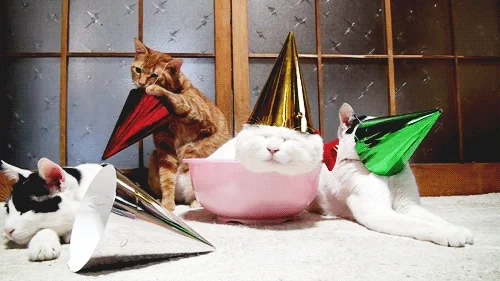

CatCon 2024
Wait a sec...
Did previous CatCons turn into a giant furball fight,
or did the cats just steal the show (and the snacks)?

let’s take a trip down memory lane:
Real moments from previous CatCons
CatCon Chronicles:
Images from the Conference



Party Paws:
CatCon Celebrations



After-Pawty Shenanigans
